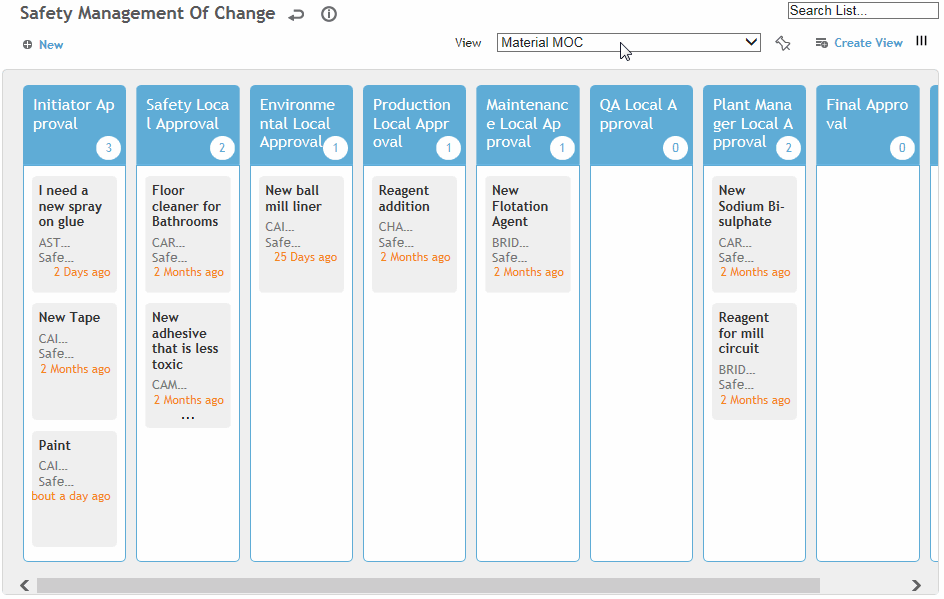

Cority users identified as approvers in the change request record can review the request and approve it to move it to the next approval stage.
An administrator can add additional approvers to each approval sequence step. When the step is reached the new approver will receive an email and can approve or reject the change request.
There are two ways to approve a request:
while reviewing the record
graphically in swimlane view
To review a change request record:
In the Safety (or Environmental or Quality) menu, click Change Requests, then retrieve the request.
Review the details of the change request, along with supplementary information on the other tabs.
When you are ready to approve or reject the change request:
To approve the request: On the main tab, choose Actions»Approve. You are prompted to enter any comments. Click Submit when you are finished. A record of the approval is added to the Approval Status tab, the Workflow Status field displays the next status in the sequence, and an email is sent to the next approver in the sequence. When the final approver in the sequence approves the change request, the Workflow Status changes to “Closed-Done” and an email is sent to the request initiator.
To reject the request: On the main tab, choose Actions»Reject. You are prompted to enter a rejection reason. Click Submit when you are finished. A record is added to the Approval Status tab, the Workflow Status reverts to Initiator Approver, and the initiator is notified.
To view change requests in the swimlane workflow view:
In the Safety (or Environmental or Quality) menu, click Change Requests.
Change the view to show the MOC for the appropriate change request type (e.g. Material MOC). The swimlane shows each approval stage, including the number of requests at each stage:

Drag a request to the next approval stage, or click the name of a change request to review the request record. If you drag the request in the swimlane, the date for the original approval level is populated with the current date and the approver at the new level is notified.
Upon final approval, the Approved checkbox (in the Details section of the change request) is selected and the person who initiated the request is notified.